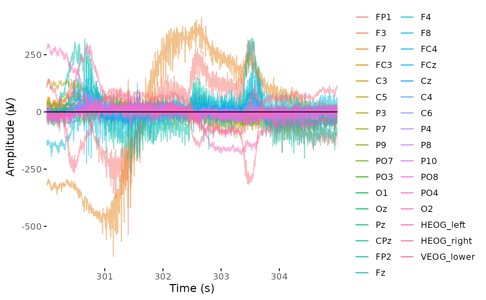

pak::pak("eegverse/erpcore")
library(erpcore)
library(here) # For general handling of local data filesEEG Seminar Notes
These are my notes and completed exercises taken from the seminar notes at https://alexenge.github.io/eegSeminaR/.
Setting Up Data
Though they use the data at alexenge/erpcore, we will use the data from eegverse/erpcore, as the former does not seem to exist anymore on GitHub.
Moreover, we will only be using data from the N170 experiment, which showed that subjects who were hooked up to EEGs and were tasked with viewing faces elicited different responses than when they were tasked to view cars.
data_dir <- here("eegs", "data/n170") # for me, all of my files are in ./eegs/
dir.create(data_dir, recursive = TRUE)
# This function downloads all n170 data to `data_dir`
get_erpcore(
component = "n170",
dest_path = data_dir,
type = "bids", # we only want data in BIDS format
subjects = "sub-001", # limit our subjects to just 001 for now
conflicts = "overwrite"
)Preprocessing
For preprocessing, we first load eegUtils, a package for working with EEG data.
pak::pak("craddm/eegUtils")
library(eegUtils)The downloaded ERP CORE data is in data/n170, as we specified in the setup section. The data is in BIDS format; though the seminar notes say the subjects are each in their respective sub-XXX/egg directory, on my end the file structure looks like {subject-number}/{subject-number}_N170.set.
So, we retrieve this .set file for subject 1:
bids_dir <- here("eegs", "data/n170")
set_file <- here(bids_dir, "1/1_N170.set")
file.exists(set_file)[1] TRUEeegUtils has functions for importing raw EEG data from various file formats into R, including the .set format used by ERP CORE.
# Needed these packages for `import_set` to work
pak::pak("R.matlab", "hdf5r") dat_raw <- import_set(set_file)Importing from EEGLAB .set file.Importing data from .fdt file.Inspecting the data type:
class(dat_raw)[1] "eeg_data"we see eeg_data is a custom class defined by eegUtils — a big list with many sub-components:
str(dat_raw)List of 8
$ signals :'data.frame': 699392 obs. of 33 variables:
..$ FP1 : num [1:699392] -2503 -2502 -2502 -2503 -2504 ...
..$ F3 : num [1:699392] 1898 1899 1896 1897 1895 ...
..$ F7 : num [1:699392] 12316 12314 12310 12308 12305 ...
..$ FC3 : num [1:699392] 2694 2696 2695 2695 2693 ...
..$ C3 : num [1:699392] 3794 3794 3794 3794 3793 ...
..$ C5 : num [1:699392] 7308 7308 7308 7309 7308 ...
..$ P3 : num [1:699392] -328 -328 -329 -329 -329 ...
..$ P7 : num [1:699392] -471 -471 -472 -472 -473 ...
..$ P9 : num [1:699392] 250 252 252 249 246 ...
..$ PO7 : num [1:699392] -2770 -2767 -2765 -2762 -2763 ...
..$ PO3 : num [1:699392] -3285 -3285 -3284 -3283 -3283 ...
..$ O1 : num [1:699392] -6382 -6383 -6383 -6380 -6377 ...
..$ Oz : num [1:699392] -5855 -5852 -5848 -5846 -5847 ...
..$ Pz : num [1:699392] 3699 3699 3698 3699 3699 ...
..$ CPz : num [1:699392] 1347 1347 1345 1345 1345 ...
..$ FP2 : num [1:699392] 959 962 965 967 967 ...
..$ Fz : num [1:699392] 9392 9393 9392 9392 9391 ...
..$ F4 : num [1:699392] 4989 4989 4990 4990 4989 ...
..$ F8 : num [1:699392] 9311 9311 9311 9311 9309 ...
..$ FC4 : num [1:699392] 8402 8403 8404 8405 8403 ...
..$ FCz : num [1:699392] 5594 5595 5595 5596 5594 ...
..$ Cz : num [1:699392] 171 171 171 170 168 ...
..$ C4 : num [1:699392] 4092 4093 4093 4093 4092 ...
..$ C6 : num [1:699392] 1757 1758 1758 1758 1756 ...
..$ P4 : num [1:699392] -1050 -1049 -1050 -1050 -1051 ...
..$ P8 : num [1:699392] -3165 -3161 -3160 -3160 -3161 ...
..$ P10 : num [1:699392] 22439 22441 22442 22445 22446 ...
..$ PO8 : num [1:699392] -5183 -5177 -5172 -5167 -5166 ...
..$ PO4 : num [1:699392] -5888 -5886 -5885 -5885 -5885 ...
..$ O2 : num [1:699392] -4763 -4760 -4760 -4757 -4753 ...
..$ HEOG_left : num [1:699392] 5347 5343 5334 5327 5322 ...
..$ HEOG_right: num [1:699392] 4003 4003 4002 4000 3996 ...
..$ VEOG_lower: num [1:699392] 4875 4875 4874 4871 4868 ...
$ srate : num 1024
$ events : tibble [640 × 4] (S3: tbl_df/tbl/data.frame)
..$ event_type : num [1:640] 202 202 79 201 73 201 75 201 112 201 ...
..$ event_onset: num [1:640] 1682 11029 15412 16091 16998 ...
..$ urevent : num [1:640] 1 2 3 4 5 6 7 8 9 10 ...
..$ event_time : num [1:640] 1.64 10.77 15.05 15.71 16.6 ...
$ chan_info:'data.frame': 33 obs. of 9 variables:
..$ electrode: chr [1:33] "FP1" "F3" "F7" "FC3" ...
..$ radius : num [1:33] 1 1 1 1 1 1 1 1 1 1 ...
..$ theta : num [1:33] NA NA NA NA NA NA NA NA NA NA ...
..$ phi : num [1:33] NA NA NA NA NA NA NA NA NA NA ...
..$ cart_x : int [1:33] NA NA NA NA NA NA NA NA NA NA ...
..$ cart_y : logi [1:33] NA NA NA NA NA NA ...
..$ cart_z : logi [1:33] NA NA NA NA NA NA ...
..$ x : num [1:33] NA NA NA NA NA NA NA NA NA NA ...
..$ y : num [1:33] NA NA NA NA NA NA NA NA NA NA ...
$ timings : tibble [699,392 × 2] (S3: tbl_df/tbl/data.frame)
..$ time : num [1:699392] 0 0.000977 0.001953 0.00293 0.003906 ...
..$ sample: int [1:699392] 1 2 3 4 5 6 7 8 9 10 ...
$ reference: NULL
$ epochs : epoch_nf [1 × 3] (S3: epoch_info/tbl_df/tbl/data.frame)
..$ epoch : int 1
..$ participant_id: chr "1_N170"
..$ recording : chr "1_N170"
$ version :Classes 'package_version', 'numeric_version' hidden list of 1
..$ : int [1:3] 0 8 0
- attr(*, "class")= chr "eeg_data"The data we actually care about is in the dat_raw$signals data frame. Here, each row is one sample (time point), each column is one channel (EEG electrode), and each value is the EEG voltage (in microvolts; µV) measured at this time sample and channel.
Viewing Data
We can visually check the data at multiple steps using the browse_data function. This will open a site we can open either on our browser or in the “Viewer” tab on the right-hand side of RStudio from which we can interactively inspect the data. We can use the function as is by calling browse_data on our dat_raw, i.e. browse_data(dat_raw), or we can manually specify which time steps we want to see as follows:
time_lim <- c(300, 305)
browse_data(dat_raw, time_lim, baseline = time_lim)Downsampling from 1024Hz to 256Hz.Loading required package: shiny
Listening on http://127.0.0.1:7626Note that unlike in the seminar example, the interactive example does not give a legend showing which colors indicate which channel. Below is the example image given in the seminar:
